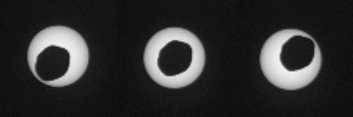
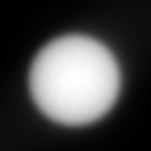
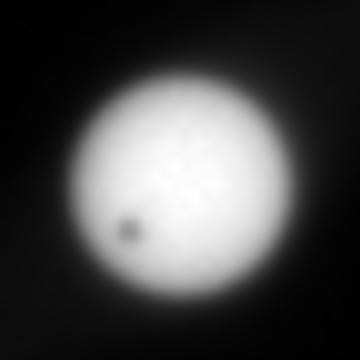

Затмение Солнца на Марсе
2013-08-17
Марсоход Curiosity в очередной раз сфотографировал Фобос
на фоне Солнца.

(c) Nasa
Интервал между левым и правым кадром 5 секунд. На Земле это явление назвали бы кольцевым солнечным затмением или прохождением Фобоса по диску Солнца . Такое событие на экваторе Марса, где находится Curiosity, бывает довольно часто. Фобос делает вокруг Марса 3 оборота в сутки. Это почти в 100 раз чаще, чем Луна вокруг Земли. На Земле солнечные затмения происходят примерно 2 раза в год, значит на Марсе должны быть 200 раз в год - примерно раз в 2 дня.
{kind=link}
{kind=link}
{kind=link}
Если бы мы жили на Марсе, то почти ежедневные затмения Солнца помогали бы развитию астрономии, и прочих наук. При удачном стечении обстоятельств на Марсе можно наблюдать 2 прохождения Фобоса и 1 прохождение Деймоса по диску Солнца за 1 день.
В день sol369 условия для наблюдения были очень хорошие. В момент затмения Солнце было почти в зените. Фотографии сделаны в 1 час 32 мин дня по местному времени LMST. Фобос виден большим, чем если бы он был на горизонте.
Из-за наклонения орбиты Луны затмения в одной точке Земли бывают не каждое новолуние, а лишь раз в 200 лет. Также не все "затмения" видны для Curiosity. Тем не менее марсоходы Spirit, Opportunity и Curiosity неоднократно видели прохождение Фобоса по диску Солнца.


Прохождение Фобоса и Деймоса по диску Солнца, сфотографированные марсоходом Opportunity в марте 2004 года. (c)Nasa